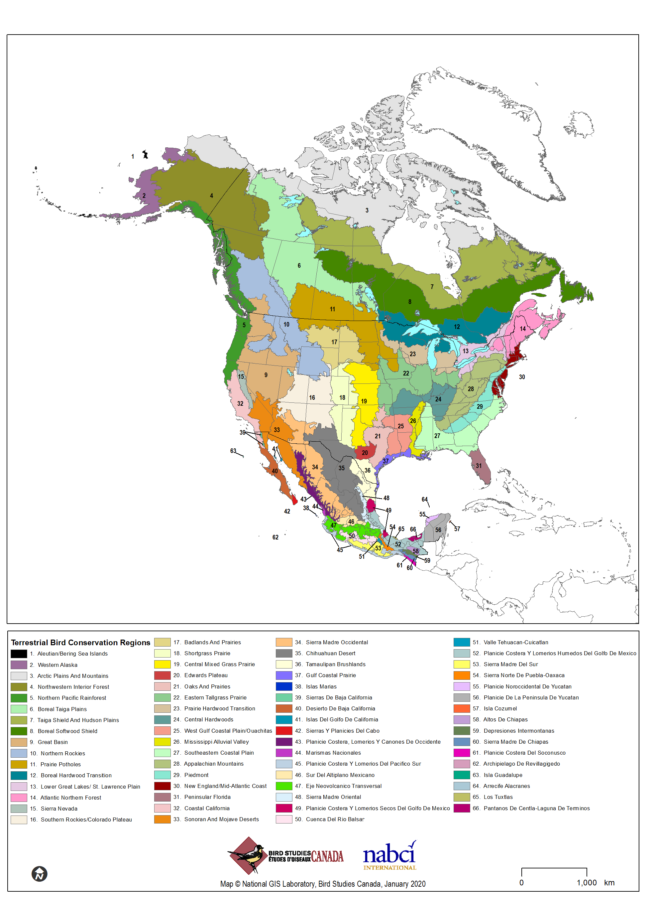

5 Introduction
Monitoring is an essential component of wildlife management and conservation science (Marsh & Trenham, 2008; Witmer, 2005). Common goals of population monitoring are to estimate the population status of target species and to detect changes in populations over time (Sauer & Knutson, 2008; Thompson, White, & Gowan, 1998). In addition to providing basic information on species distributions, effective monitoring programs can identify species that are at-risk because of small or declining populations (Dreitz, Lukacs, & Knopf, 2006); provide an understanding of how management actions affect populations (Alexander, Stephens, Geupel, & Will, 2008; Lyons, Runge, Laskowski, & Kendall, 2008); and evaluate population responses to landscape alteration and climate change (Baron et al., 2008; Lindenmayer & Likens, 2009).
While monitoring at local scales remains critical, there is an increasing need to monitor the consequences of environmental change over large spatial and temporal scales and address questions much larger than those that can be answered within individual management units (Dreitz, Stinson, Hahn, Tack, & Lukacs, 2017; Lindenmayer & Likens, 2009). Reconciling disparities between the geographic scale of management actions and the scale of ecological and species-specific responses is a persistent challenge for natural resource management agencies (Ruggiero, Hayward, & Squires, 1994). Population monitoring of eco-regional landscapes provides an important context for evaluating population change at local and regional scales, with the potential to identify causal factors and management actions for species recovery (Manley, Schlesinger, Roth, & Van Horne, 2005; Sauer & Knutson, 2008).
Before monitoring can be used by land managers to guide conservation efforts, sound program designs and analytical methods are necessary to produce unbiased population estimates (Sauer & Knutson, 2008). At the most fundamental level, reliable knowledge about the status of avian populations requires accounting for spatial variation and incomplete detection of the target species (Pollock et al., 2002; Rosenstock, Anderson, Giesen, Leukering, & Carter, 2002; Thompson, 2002). Addressing spatial variation entails the use of probabilistic sampling designs, which allows population estimates to be extended over the entire area of interest (Thompson et al., 1998). Accounting for incomplete detection involves the use of appropriate sampling and analytical methods to address the fact that few, if any, species are so conspicuous that they are detected with certainty when present during a survey. Accounting for these two sources of variation ensures that observed trends reflect true population changes rather than artifacts of the sampling and observation processes (Pollock et al., 2002; Thompson, 2002).
The apparent large-scale declines of avian populations and the loss, fragmentation and degradation of native habitats highlight the need for extensive and rigorous landbird monitoring programs (Rich et al., 2004; US North American Bird Conservation Initiative Monitoring Subcommittee, 2007). The US North American Bird Conservation Initiative’s (NABCI) “Opportunities for Improving Avian Monitoring” (NABCI Monitoring Subcommittee, 2007) provided goals for avian monitoring programs including:
Goal 1: Fully integrate monitoring into bird management and conservation practices and ensure that monitoring is aligned with management and conservation priorities.
Goal 2: Coordinate monitoring programs among organizations and integrate them across spatial scales to solve conservation or management problems effectively.
Goal 3: Increase the value of monitoring information by improving statistical design.
Goal 4: Maintain bird population monitoring data in modern data management systems. Recognize legal, institutional, proprietary, and other constraints while still providing greater availability of raw data, associated metadata, and summary data for bird monitoring programs.
With the NABCI Monitoring Subcommittee (2007) guidelines in mind, Bird Conservancy of the Rockies and partners initiated a broad-scale collaborative bird monitoring program in 2008 entitled “Integrated Monitoring in Bird Conservation Regions” (IMBCR) (Blakesley & Hanni, 2009). See Appendix B: IMBCR Program and Stratification History for a complete history of this program. The monitoring objectives of the IMBCR partnership are to:
- Provide robust density, population and occupancy estimates that account for incomplete detection and are comparable at different geographic extents;
- Provide long-term status and trend data for all regularly occurring breeding landbird species throughout the study area;
- Provide a design framework to spatially integrate existing bird monitoring efforts in the region to provide better information on distribution and abundance of breeding landbirds, especially for high priority species;
- Provide basic habitat association data for most bird species to address habitat management issues;
- Maintain a high-quality database that effectively merges records between regional data nodes and is accessible to all of our collaborators as well as to the public over the internet, in the form of raw and summarized data; and
- Generate decision support tools that help guide conservation efforts and provide a better measure of conservation success.
The IMBCR design includes Bird Conservation Regions (BCRs) as sampling frames (Figure 5.1), stratified by land ownership inside each BCR (NABCI Monitoring Subcommittee, 2007). BCRs provide a spatially consistent framework for bird conservation in North America. Each BCR represents a distinct ecological region with similar bird communities, vegetation types, and resource management interests (NABCI, 2000). Population monitoring within BCRs is implemented with a flexible hierarchical framework of nested units, where information on bird populations can be partitioned into smaller units for small-scale conservation planning, or aggregated to support large-scale conservation efforts. By focusing on scales relevant to management and conservation, information obtained from monitoring in BCRs can be integrated into research and management objectives at various scales applicable to managers (Pavlacky et al., 2017; Ruth et al., 2003).
